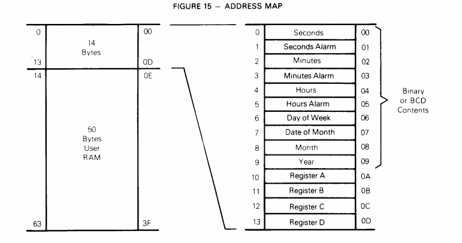

MIT6828-lab2-detectmemory
概述 打开pamp.c文件，首先映入眼帘的函数就是nvram.read i386_detect_memory ，代码如下：
1 2 3 4 5 6 7 8 9 10 11 12 13 14 15 16 17 18 19 20 21 22 23 24 25 26 27 28 29 30 31 32 33 34 35 36 // -------------------------------------------------------------- // Detect machine's physical memory setup. // -------------------------------------------------------------- static int nvram_read(int r) { return mc146818_read(r) | (mc146818_read(r + 1) << 8); } static void i386_detect_memory(void) { size_t basemem, extmem, ext16mem, totalmem; // Use CMOS calls to measure available base & extended memory. // (CMOS calls return results in kilobytes.) basemem = nvram_read(NVRAM_BASELO); extmem = nvram_read(NVRAM_EXTLO); ext16mem = nvram_read(NVRAM_EXT16LO) * 64; // Calculate the number of physical pages available in both base // and extended memory. if (ext16mem) totalmem = 16 * 1024 + ext16mem; else if (extmem) totalmem = 1 * 1024 + extmem; else totalmem = basemem; npages = totalmem / (PGSIZE / 1024); npages_basemem = basemem / (PGSIZE / 1024); cprintf("Physical memory: %uK available, base = %uK, extended = %uK\n", totalmem, basemem, totalmem - basemem); }
首先根据注释我们可以知道这两个函数用于计算我们已有的内存，内存包括基础内存basemem ，一位的扩展内存extmem以及16位的扩展内存ext16mem
而且通过i386_detect_memory函数后面的if-else if逻辑来看，extmem与ext16mem不能同时存在，且总内存totalmem=basemem+ 扩展内存
npage = 总内存的页表数量npages_basemem = 基础内存所包含的页表数量
nvram_read 厘清上面的信息之后，我们发现i386_detect_memory调用了一个nvram_read函数，通过这个函数计算得到内存的大小
首先我们要知道nvram是什么，NVRAM :全名Non-Volatile Random Access Memory,非易失性随机访问存储器，断电后也可以存储信息。
nvram_read这种函数定义说明我们的系统信息存储在nvram中，我们需要从中读取内存大小的信息
接下来是mc146818_read函数，向上溯源我们发现kclock.c以及kclock.h文件中存在我们需要函数以及定义的宏
kclock.c 1 2 3 4 5 6 7 8 9 10 11 12 13 unsigned mc146818_read(unsigned reg) { outb(IO_RTC, reg); //RTC -- real time clock. It is the chip that keeps your computer's clock up-to-date return inb(IO_RTC+1); } void mc146818_write(unsigned reg, unsigned datum) { outb(IO_RTC, reg); outb(IO_RTC+1, datum); }
kclock.h 1 2 3 4 5 6 7 8 9 10 11 12 13 14 15 16 /* NVRAM bytes 7 & 8: base memory size */ /* NVRAM bytes 9 & 10: extended memory size (between 1MB and 16MB) */ /* NVRAM bytes 38 and 39: extended memory size (between 16MB and 4G) */
首先了解RTC，见注释，如果想了解更多可以查看此链接
这里我大概的理解是通过操作IO_RTC 0x70以及 IO_RTC+1 0x71端口我们可以读取NVRAM中相应字节处存储的数据，这其中的原理可能与中断(interrupt)有关，但是我并不太了解具体的原理，如果哪位了解可以通过邮件等各种方式指导我以下，感谢！
最后，经CSDN博客 的指导我发现mc146818是一种芯片，并且了解到芯片的datasheet介绍了相关nvram的存储结构，此处借鉴了该博客的排版及内容，感谢！侵删！

观察kclock.h可以发现，本次操作不涉及0x0-0xD之间的接口，这些接口与操作系统的时间有关；JOS定义的MC_NVRAM_START从0xE开始，如上图所示，0xE之后的50个字节属于用户RAM，这里我没有查到后面50个字节每个字节具体代表的意义，但是通过kclcok.h中的定义可以大概看出一些位的功能的。
最后，此网站 可以下载几乎所有芯片的datasheet，大家可以参考以下。
osdev 应该属于操作系统方面的维基百科了吧